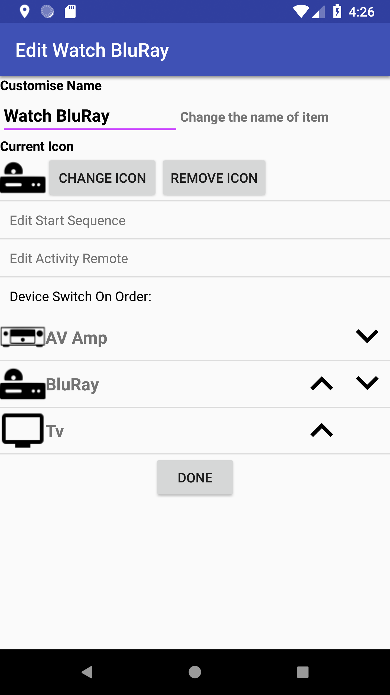

    <div class="container content">
      {% assign prev_page = "Create Activities" %}
      {% assign prev_href = "activities.html" %}
      {% assign next_page = "Activity Remotes" %}
      {% assign next_href = "activityremote.html" %}
      {% include usergnav.html %}

      <div class="row">
        <div class="col-lg-7">
          <h2 class="page-title">Edit Activity</h2>
          <p>To edit an Activity press the  button to the right of the required item on the <a href="navigation.html">Navigation Menu</a>; this will open a screen similar to that shown in the figure.</p>
          <p>Here you can:</p>
          <ul id="bullets">
            <li>Change the name of the Activity,</li>
            <li>Change or remove the icon that should be displayed in the <a href="navigation.html">Navigation Menu</a>,</li>
            <li>Edit the Activity <a href="keyseq.html">Start Sequence</a>.</li>
            <li>Edit the <a href="activityremote.html">Activity Remote</a>.</li>
            <li>Change the order that devices are switched on when the activity starts.</li>
          </ul>
          <p>Once you have completed your modifications, press the <i>Done</i> button.</p>
          <p>Pushing the <i>Back</i> button at any time will cancel the operation.</p>
        </div>
        <div class="col-lg-5">
          <div class="row spacer2 d-none d-lg-block"></div>
          <p class="aligncenter"></p>
        </div>
      </div>
      {% include usergnav.html %}
    </div>